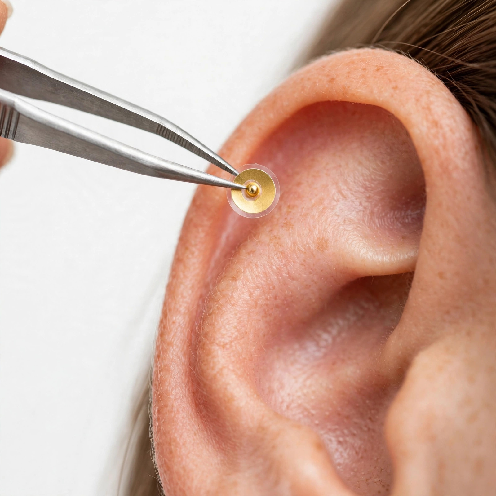

自宅で耳ツボセルフケアを始めるときに必要な用品のご案内です。当店の施術でも使っているマグレイン（阪村研究所）を中心に、選び方のポイントと一緒に紹介します。貼り方は「セルフケアガイド」をご覧ください。

小さなシールをつまむには先の細いピンセットが必須です。精密作業用のものが扱いやすく、貼る位置の微調整もしやすくなります。
Amazonで探すポイントを押して確かめるための棒。綿棒でも代用できますが、先が丸い専用スティックのほうが感覚をつかみやすいです。
Amazonで探す貼る前に耳の皮脂を拭き取る用。個包装タイプは衛生的で、持ち運びにも便利です。シールの持ちがよくなります。
Amazonで探す※商品画像はイメージです。実際の製品の形状・色味はリンク先でご確認ください。※初めての方は、シードとピンセットの2点からで十分始められます。
「自分で貼るのは難しそう」と感じたら、来店での施術もどうぞ。
位置を一つずつ確認しながら貼り、耳・頭・首肩のケアと組み合わせます。